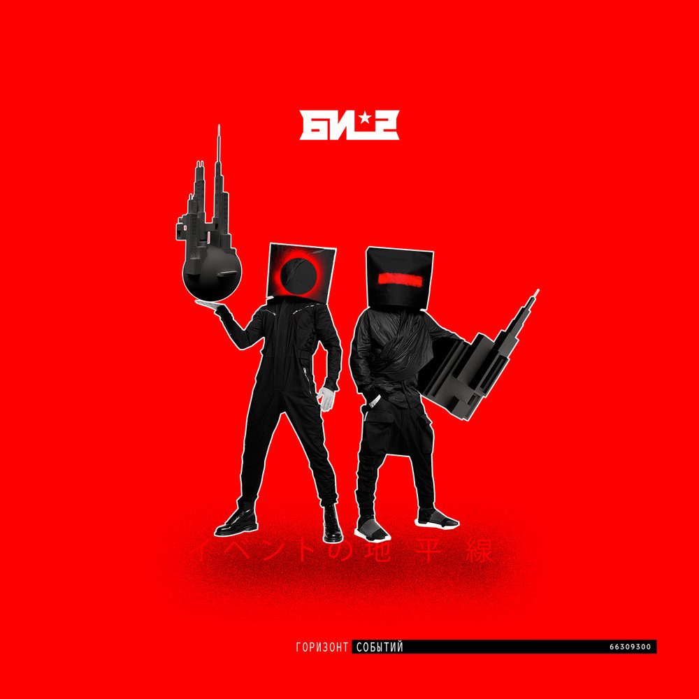

Белорусско-российская рок-группа, образованная в 1988 году в Бобруйске. Основатели и бессменные участники - Шура Би-2 и Лёва Би-2. В состав команды также входят: Андрей Звонков, Макс Лакмус, Борис Лифшиц и Ян Николенко. В 2017 году Би-2 завершили работу над десятым студийным альбомом «Горизонт событий».